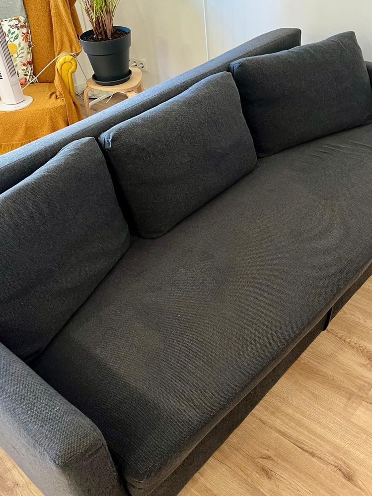
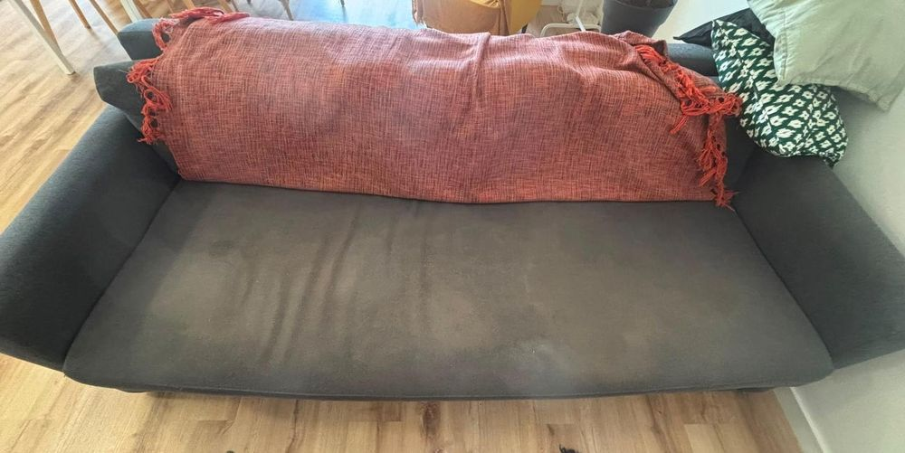
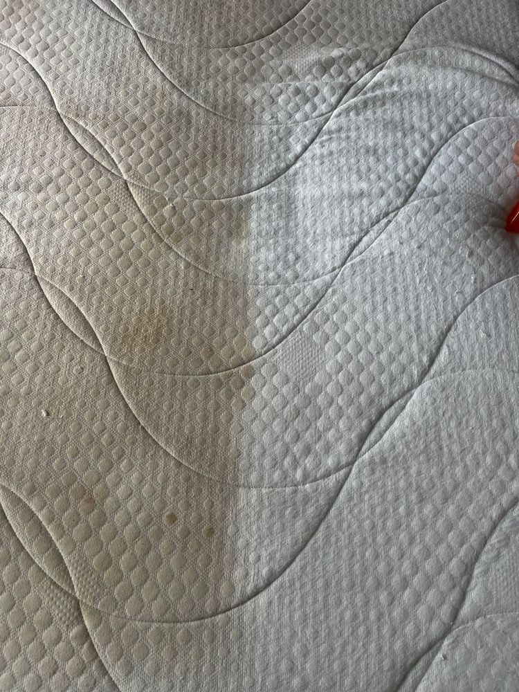
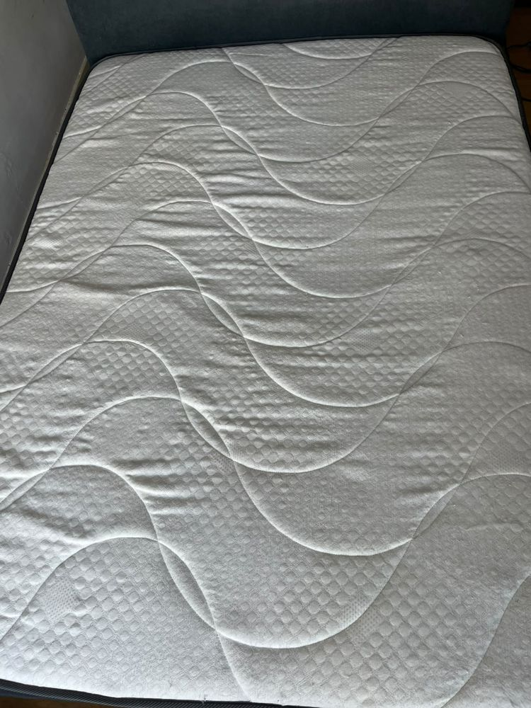
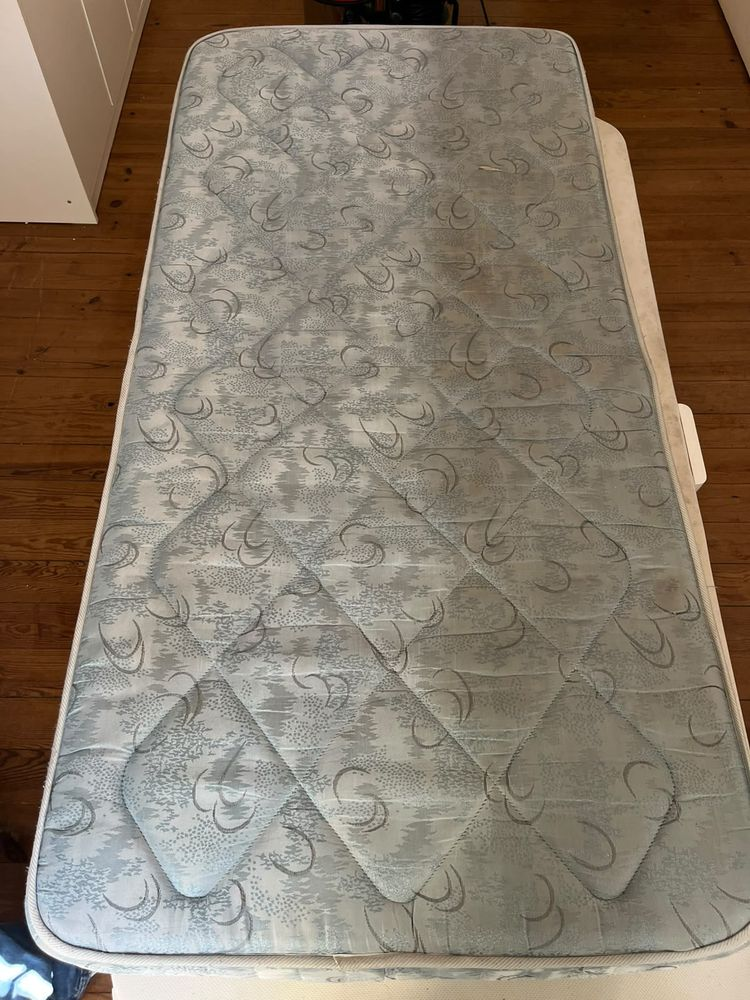
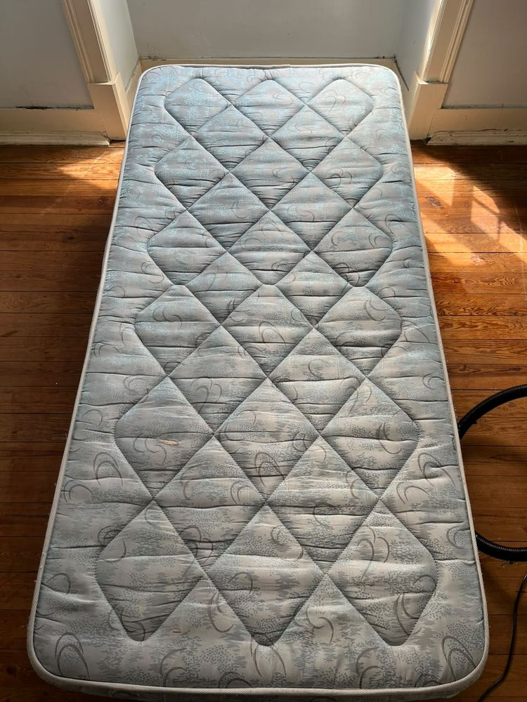
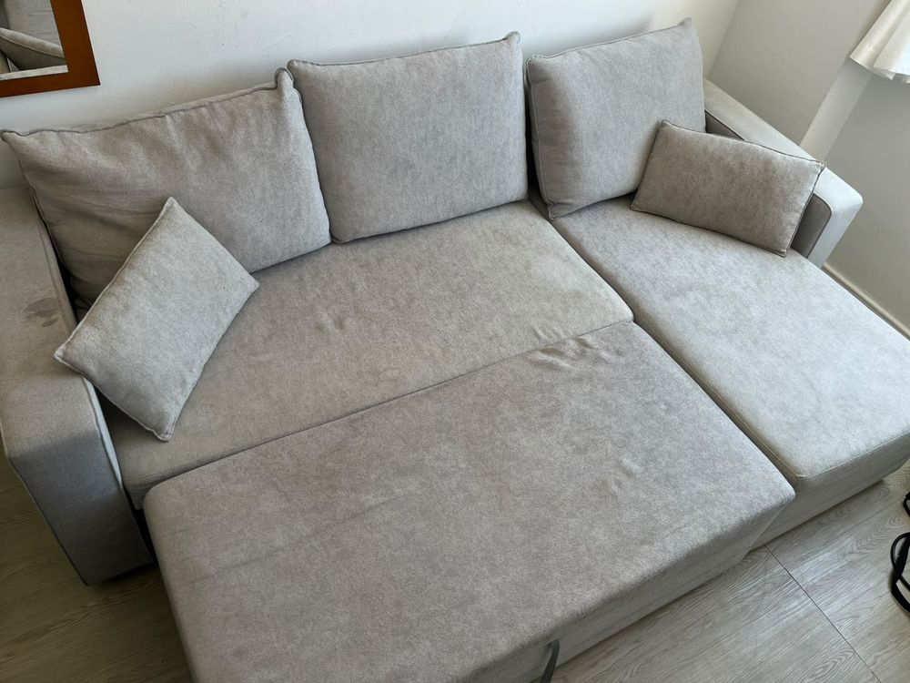
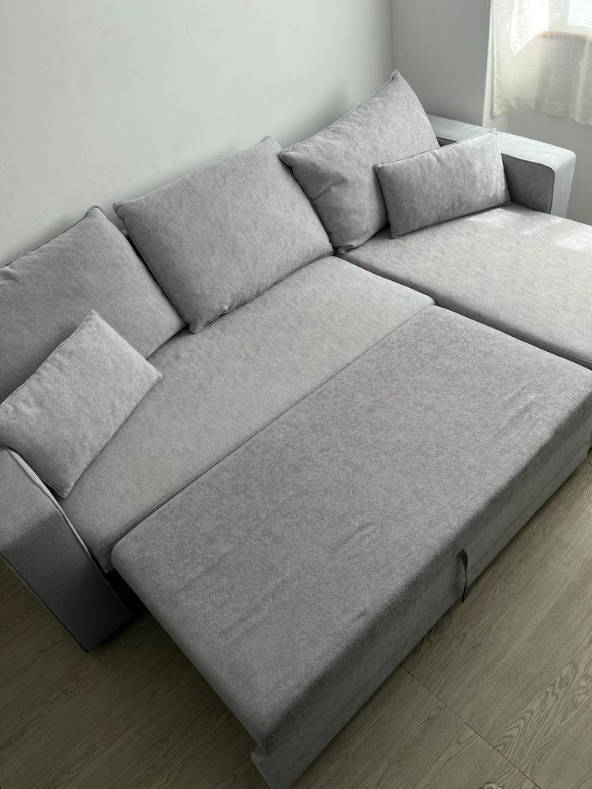
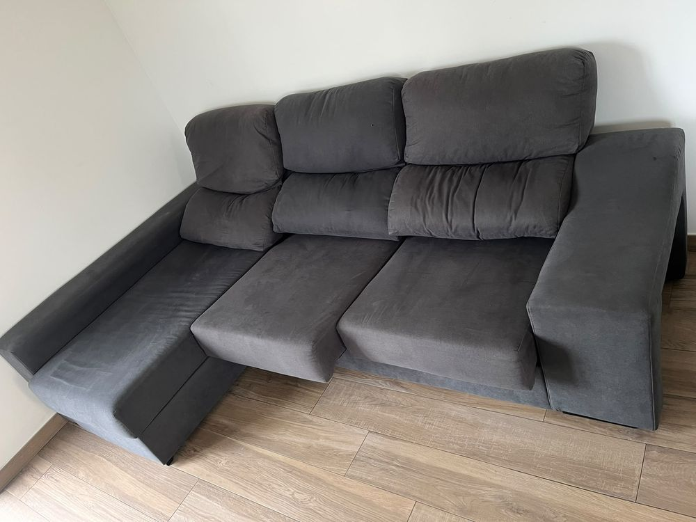
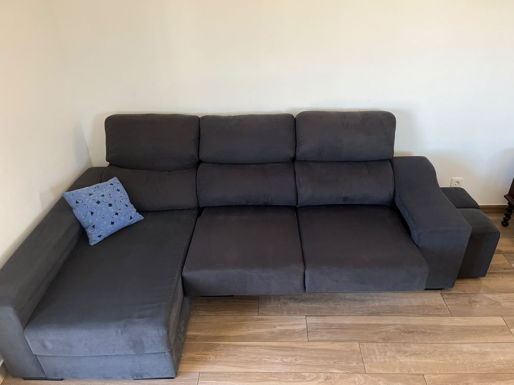

Atendemos em Lisboa, Oeiras, Cascais, Sintra e Amadora com equipamentos profissionais de higienização. Orçamento gratuito, atendimento ao domicílio e possibilidade de atendimento no próprio dia, mediante disponibilidade.


Arraste para comparar — resultado real de um trabalho HigiPro HP
Trabalhamos diretamente no seu espaço, com equipamento profissional de injeção-extração e produtos adequados a cada tipo de tecido.
Eliminamos manchas, odores, ácaros e sujidade profunda, devolvendo ao seu sofá uma aparência renovada com equipamentos profissionais.
Removemos ácaros, bactérias, suor e manchas, promovendo um ambiente mais saudável e um sono de maior qualidade.
Limpeza profissional de cadeiras, poltronas e estofados de uso diário, eliminando sujidade, manchas e odores.
Proteja os seus estofados contra líquidos e manchas, aumentando a durabilidade e facilitando a limpeza.
Limpeza profunda de tapetes e carpetes, removendo poeiras, manchas, odores e ácaros sem danificar as fibras.
Combinamos equipamentos profissionais, atendimento personalizado e resultados visíveis para que tenha uma experiência tranquila do início ao fim.
Vamos até si em Lisboa, Oeiras, Cascais, Sintra, Amadora e zonas próximas.
Máquinas e produtos específicos para remover manchas, ácaros, odores e sujidade profunda.
Envie fotografias pelo WhatsApp e receba um orçamento rápido, sem compromisso.
Também realizamos serviços aos sábados e domingos, mediante disponibilidade.
Quando a agenda permite, conseguimos atender no próprio dia.
Os nossos clientes recomendam a HigiPro HP pela qualidade, pontualidade e profissionalismo.
Trabalhos feitos pela HigiPro HP em casas reais na Grande Lisboa — sem edição, sem filtros.








Envia uma mensagem por WhatsApp ou Instagram com fotos e o que precisa de higienizar.
Analisamos o pedido e enviamos um orçamento adaptado à sua necessidade, sem compromisso.
Chegamos com todo o equipamento profissional — não precisa de preparar nada.
Em poucas horas está seco e pronto a usar — limpo, fresco e sem odores.
Deslocamo-nos até si — não precisa de sair de casa nem de transportar nada.
Envie-nos uma mensagem agora e receba o seu orçamento personalizado, sem compromisso.
Mais clientes satisfeitos todos os dias em Lisboa e Grande Lisboa.
"Fiz a higienização do meu sofá e ficou impecável. Fiquei impressionada com a quantidade de sujidade removida e com o cuidado que tiveram em proteger e deixar o chão da sala limpo e cheiroso."
Karina Silva"O meu sofá ficou impecável, com um aspeto renovado. Foram profissionais, pontuais e muito cuidadosos."
Gabriel Assis"É raro encontrar um profissional com tanta dedicação, simpatia e excelência. Superou todas as expectativas."
Pedro José Silva Madeira"Muito atencioso, educado e caprichoso. Serviço rápido e muito bem executado."
Júlio César Souza